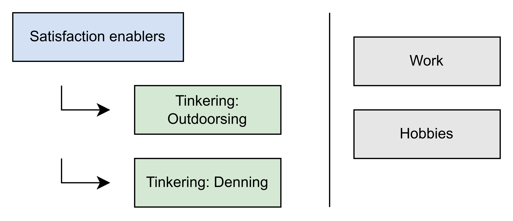

Tinkering: hands-on experimentation toward a loose goal. Tinkering enables satisfaction-generating activities without needing to be directly satisfying itself. In my world, there are two types: outdoorsing and denning.
Outdoorsing: tinkering that enables outdoor activities. Think: building out a camper truck so I can go camping.
Denning: tinkering that enables comfortable reclining activities. Think: building a home server so I can watch Parks and Rec.
Work: doing stuff to get paid. Outdoorsing and denning aren’t work because they aren’t done for payment.
Hobbies: activities that are ends in themselves - a person does them for their own sake. Outdoorsing and denning aren’t hobbies because they’re means to an end, not ends in themselves.
How it all fits together
